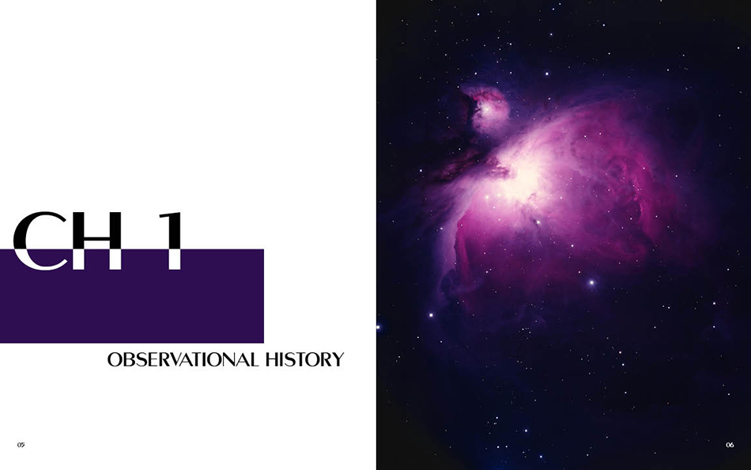

Nebula Wikipedia Book | An Exercise
As an exercise to hone my editorial layout skills, I used the content from a single Wikipedia entry and created a multi-page book. My goal was to mix text and image, incorporate grid systems and typographic hierarchy, use thoughtful typographic choices. At the same time, I had to heed to rhythm, contrast, and visual interest. The end goal was to create a grid structure and design system that I could utilize through every page of my book. The reason I settled on nebulae as my topic was because I have always enjoyed astronomy, and I knew that this topic would provide good visuals.


The Process
One of the first things that I had to decide on was, of course, which typeface I was going to use. I created four different combinations of the type specimen. After receiving feedback, I ended up choosing Monterey as the heading text and Lucida Bright as the body copy. Monterey gives off a scientific, mystic, and futuristic image, so I felt it would fit with my concept of "Nebula" perfectly. Lucida Bright was chosen because it was one of the most readable typefaces that paired well with Monterey.